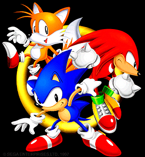
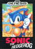
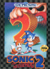
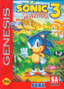
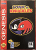

|
A dream project finally realized on the Sega Saturn! 1997. PROJECT SONIC started!  |
Part 1
Sonic Jam
They're back on the Sega Saturn! Now on sale: 4,800 yen (5,040 yen including tax) |
One of the new elements added to this Sonic Jam is the Sonic World.
Sonic World is composed of full 3D polygons.You'll be able to see the history of the character, the timelime of the game, various illustrations of Sonic themes, sounds, the manuals for the Mega Drive and Genesis (Mega Drive for overseas use) (even the inside of the manuals are included), and all the other materials of the Sonic series.
That's all you need to know about Sonic!
For all four titles included in the collection, a new mode has been added to play only time attack and special stages.
Sonic & Knuckles also features the Mega Drive version's unique Lock-On System function, which has been recreated. It's the best of both worlds!
There is also an original opening CG movie that was newly created for this software.
The CG rendering of Sonic, which is surprisingly new to the Saturn, is a must-see.
In addition, Sonic 1 allows you to spin dash, and the auto-save function allows you to continue playing the game anytime you want.
 Sonic the Hedgehog
The first game in the series released by Sega in 1991.
His cool sense of style and unique high-speed action, which had never been seen before, were well received, and he became a big hit not only in Japan but all over the world.
This is where the legend of the supersonic hedgehog began.
 Sonic the Hedgehog 2
The second game in the series, which was released the following year, featured the cute fox Miles "Tails" Prower as a sidekick, allowing two players to play simultaneously.
The sense of speed and the tricks in each zone have been further upgraded, making it even more complete than the previous game. You can also play against other players by splitting the screen in two.
 Sonic the Hedgehog 3
It's been two years since the last game, and this one is a two-part story. This game is the first part.
The myserious character Knuckles the Echidna appears on the stage, closing in on Sonic at every turn. The tricks in each zone have been further refined.
 Sonic & Knuckles
Six months after the release of Sonic 3, a veil of mystery shrouded this title, revealing its existence.
The adoption of the lock-on system, in which an additional cartridge is inserted on top of the cartridge, ahs further expanded the range of games available.
This time, Knuckles joins as a playable character.